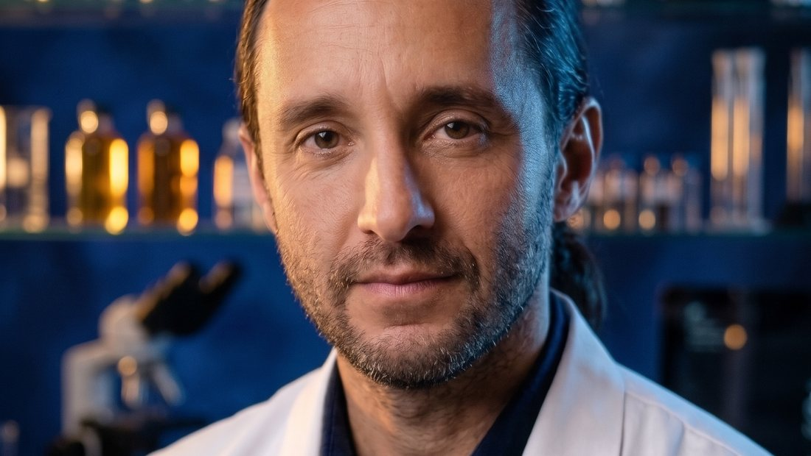

Нервова система
Хронічний стрес, погіршення сну, виснаження під час тривалої терапії.
Компоненти, що підтримують рівнішу реакцію на стрес, кращий сон і відчуття відпочинку.
Стандартизований екстракт 26 лікарських коренів для підтримки організму під час онкотерапії. Виготовлений на фармацевтичному заводі й застосовується разом із лікуванням, яке призначив ваш лікар.
 Doctor BombushkarЗасновник · розробник формули
Doctor BombushkarЗасновник · розробник формули
Одна платформа для пацієнтів, родичів, лікарів і партнерів. Скажіть, хто ви, — і ми покажемо, з чого почати.
Почніть зі спокійного пояснення: що таке ATINE, як його приймати і як поєднувати з лікуванням.
01Що таке ATINE і навіщо він потрібен02Як приймати: схема прийому03Безпека і поєднання з лікуванням04Отримати консультаціюПеревірте все, що вас турбує: документи, публікації і чесні межі доказів.
01Документи та патенти02Наукові публікації03Що встановлено, а що ні04Поговорити з консультантомНаукові дані з рівнями доказовості, фітохімічний профіль і матеріали для фахівців.
01Резюме продукту02Механізми дії03Запитання лікаря04Запросити протоколи
Бренд із юридичним захистом, GMP-виробництвом і науковою програмою.
01Цінність для партнерів02Експерти та наукова рада03Виробництво і документи04Запит партнераПротипухлинна терапія — це тривале навантаження не лише на пухлину, а й на нервову систему, клітини та сили людини. ATINE не замінює лікування, а допомагає організму його проходити.
Хронічний стрес, погіршення сну, виснаження під час тривалої терапії.
Компоненти, що підтримують рівнішу реакцію на стрес, кращий сон і відчуття відпочинку.
Лікування створює додаткове навантаження на клітини і тканини.
Антиоксидантна та протизапальна підтримка рослинних екстрактів.
Напрям, який зараз активно досліджують у лабораторіях.
Доклінічні дані 2025–26 і відкриті наукові публікації.
| Звичайний фіточай | ATINE | |
|---|---|---|
| Сировина | Листя, квіти, суміш трав | Лише корені й кореневища 26 рослин |
| Дозування | «На око» | Точна доза кожного екстракту за ТУ |
| Виробництво | Фасування трав | Фармацевтичний завод |
| Дослідження | Немає | 4 лабораторні моделі, 5 публікацій |
| Застосування | Самостійно | За погодженням з лікарем |
Що таке ATINE, як приймати, чи поєднується з лікуванням. Простими словами.
Розділ для пацієнтівФітохімічний профіль, доклінічні дані, протоколи супроводу і регуляторний статус.
Розділ для лікарівATINE побудований на мультитаргетній логіці: 26 коренів спрямовані не на одну мішень, а на систему процесів, які страждають під час тривалого лікування. Натисніть на вузол, щоб побачити, що вже встановлено, а що лишається гіпотезою.
У клініко-лабораторних спостереженнях описано підвищення активності NK-клітин і нормалізацію співвідношення CD4+/CD8+. Дані спостережні й потребують підтвердження в контрольованих дослідженнях.
П’ять етапів, які описали лабораторії у 2025–2026 роках на густому екстракті ATINE. Коротко і зрозуміло — повний науковий опис у розділі «Наука».
Активні речовини екстракту проникають усередину клітини й змінюють її внутрішню «логістику» — так клітина отримує сигнал до перебудови.
ATINE не зупиняється на досвіді: кожен етап перевіряється незалежними лабораторіями. Ось де ми зараз і які дослідження заплановані.
33 роки практики застосування фіточаю, серії спостережень після радикального лікування.
Фітохімічна основа 26 рослин і описані біологічні ефекти їхніх сполук.
U-138 MG, HEK 293, Allium cepa та Drosophila: підтверджено біологічну активність густого екстракту.
5 наукових робіт і двотомна монографія, що систематизує доказову базу.
Western blot: γ-H2AX, p-ATR, p-ATM, p53 — який сигнальний шлях запускає екстракт.
Проточна цитометрія та Annexin V / PI: апоптоз, некроз чи аутофагія.
Порівняння на первинних нормальних клітинах людини (фібробласти HDF).
RNA-seq і фракціонування LC-MS/MS: які гени й які групи речовин задіяні.
Генетичні моделі колоректальної та гліальної пухлин у цілісному організмі.
План досліджень за монографією ATINE®. Результати майбутніх етапів можуть як підтвердити, так і спростувати окремі гіпотези — так працює наука.
Останні роботи про склад, механізми та спостереження ATINE — з журналами й DOI.
[автори — уточнити] · Pedagogy and Psychology of Sport
Ключовий висновок: Біологічна активність густого екстракту в експериментальних тест-системах.
[автори — уточнити] · Journal of Education, Health and Sport
Ключовий висновок: Огляд фітохімічних груп 26 рослин і їхніх описаних біологічних ефектів.
[автори — уточнити] · Journal of Education, Health and Sport
Ключовий висновок: Клініко-лабораторні спостереження показників імунного статусу (рівень доказовості C).
Оберіть формат, який краще вписується у ваш режим лікування та відновлення. Форми відрізняються способом прийому та концентрацією; схему погоджуйте з лікарем.

Гранульований чай розчиняється у теплій воді та п’ється невеликими порціями. Коли потрібна м’яка підтримка, гідратація й форма напою замість таблеток.


Найбільш концентрована форма. Дозу відміряють краплями або чайною ложкою, додаючи до води; зручно точно налаштувати добову кількість з лікарем.

Високо стандартизований порошковий екстракт на основі 26 коренів у зручних саше.
Три запитання — і ми підкажемо, з чого почати. П’ять форм ATINE — це одна система прийому, а не п’ять різних продуктів.
З фіточаю починається схема ATINE: одна порція — одна базова доза, тричі на добу. Найкращий спосіб познайомитися з формулою й оцінити переносимість.
Це не медична рекомендація. Форму і схему прийому узгоджуйте з лікарем.
Фіточай як основа, а таблетки дозволяють поступово нарощувати навантаження кроком у 0,5 дози — так, як передбачає розширена схема.
Це не медична рекомендація. Форму і схему прийому узгоджуйте з лікарем.
Якщо ви вже знайомі з ATINE, капсули (1 доза) і саше (3 дози) дають зручне й точне продовження схеми без зайвих прийомів.
Це не медична рекомендація. Форму і схему прийому узгоджуйте з лікарем.
Найбільш концентрована форма для індивідуального підбору: одна чайна ложка — 5 умовних доз. Дозування визначає лікар.
Це не медична рекомендація. Форму і схему прийому узгоджуйте з лікарем.
Технічні умови, патенти, торговельні марки в трьох юрисдикціях і відкриті наукові публікації. Усе можна перевірити.
Лікар — хранитель рецептури, професори, що провели наукову верифікацію, і рецензенти монографії ATINE®.
Лікар, фітотерапевт, хранитель рецептури ATINE
Автор формули з 26 коренів, 33 роки клінічної практики
«Онкологічний пацієнт заслуговує не на чергову обіцянку, а на максимально чесну відповідь: що ми вже знаємо і чого ще не знаємо.»
Доктор медичних наук, професор
Патологічна фізіологія; співавтор монографії ATINE®
«Спочатку я був скептиком. Але результати досліджень in vitro та in vivo змінили мою думку.»
Доктор медичних наук, професор, заслужений діяч науки і техніки України
Рецензент монографії ATINE®
«Монографія поєднує традиційну фітотерапію зі суворими стандартами молекулярної біології та патологічної фізіології.»
Події бренду, наукові результати, публікації та партнерства.
Наука, продукти, схеми прийому, сертифікати якості та прес-центр — тепер в одному місці українською, російською та англійською.
ІМБГ НАН України та КНУ імені Тараса Шевченка дослідили густий екстракт ATINE на чотирьох тест-системах.
Детальніше →Огляди, експериментальні та клініко-лабораторні спостереження опубліковано в рецензованих журналах з DOI.
Детальніше →Публікації в медіа, інтерв’ю, нагороди та дипломи ATINE.
[Короткий анонс публікації: 2–3 речення про що матеріал.]
[Короткий анонс: тема розмови, ключова думка.]
Doctor Bombushkar — «за значні успіхи в науці», ще під час навчання в медичному університеті.
Doctor Bombushkar розповідає, звідки походить формула ATINE, чому в ній саме 26 коренів і як традиція поєдналася з доказовою наукою.
Усі відео каналу ↗Двотомна наукова праця про склад, механізми дії та дослідження ATINE® за 1993–2026 роки: 26 лікарських рослин, експериментальна серія на чотирьох моделях і 33 роки клінічних спостережень.
Автори: А. І. Гоженко, В. Жуков, І. Л. Попович, Н. С. Бадюк, I. S. Bombushkar
Електронна версія буде доступна безкоштовно. Друковане видання — незабаром.
Залиште заявку — ми зв’яжемося, розповімо про ATINE і допоможемо обрати форму та орієнтовну схему, яку ви узгодите зі своїм лікарем.
Цей сайт не призначений для забезпечення діагностики, лікування або медичних порад. Інформація на цьому сайті надана лише з інформаційною метою. Будь ласка, проконсультуйтеся з лікарем про будь-які медичні та пов'язані зі здоров'ям діагнози та методи лікування. Інформація на цьому сайті не повинна розглядатися як заміна консультації з лікарем. Заяви, зроблені про конкретні товари на цьому сайті, не підтверджені для лікування, діагностики або запобігання хворобам.
ATINE — добавка дієтична. Не є лікарським засобом. Не замінює протипухлинне лікування.